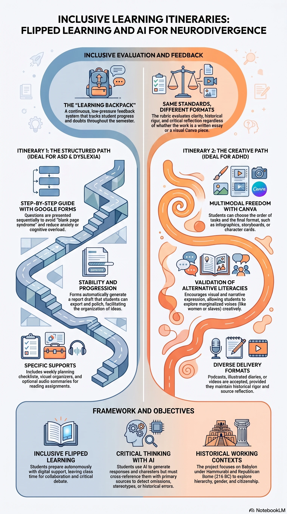
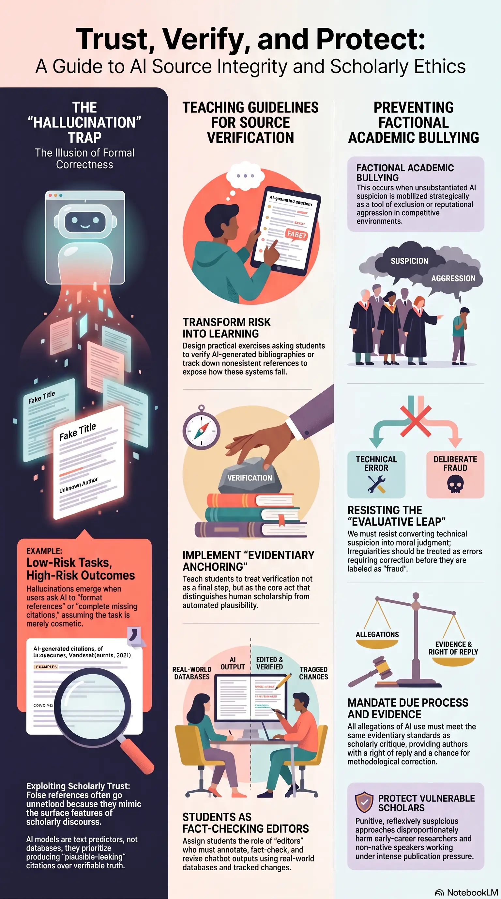

Aula invertida inclusiva
Itineraris d’aprenentatge estructurats i pràctiques docents accessibles.
Obrir imatge ↗Tres infografies sobre aprenentatge inclusiu, ensenyament de la Història Antiga i ús crític de la IA, acompanyades de les referències i de les recerques posteriors.

Itineraris d’aprenentatge estructurats i pràctiques docents accessibles.
Obrir imatge ↗
Aprendre a partir de veus i interpretacions diverses del món antic.
Obrir imatge ↗
Fonts històriques, ús responsable de la IA i verificació rigorosa de les referències.
Obrir imatge ↗Per consultar com citar i reutilitzar aquests materials, visita el registre obert de Zenodo ↗.